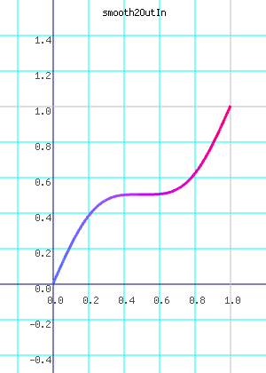
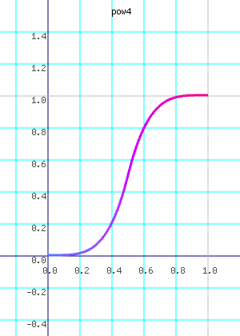
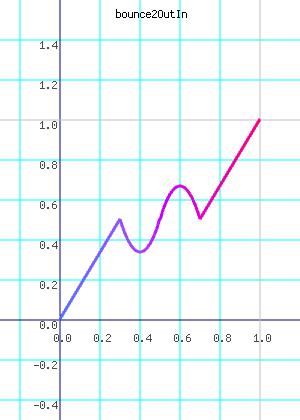
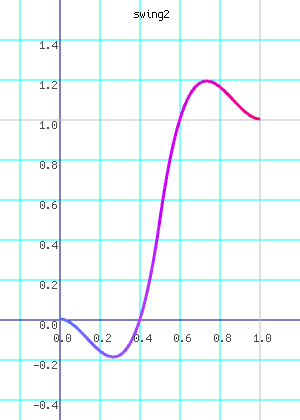

This page shows the various Interpolator instances defined in the Interpolations class. The name is provided next to the graph to easily copy an Interpolator name into your code.
| Graph A | Name A | Graph B | Name B | Graph C | Name C |
|---|---|---|---|---|---|
| linear | smooth | smoothOutIn | |||
| smooth2 |  | smooth2OutIn | smoother | ||
| smootherOutIn | fade | fadeOutIn | |||
| pow2 | pow3 |  | pow4 | ||
| pow5 | pow0_75 | pow0_5 | |||
| pow0_25 | pow2In | slowFast | |||
| pow3In | pow4In | pow5In | |||
| pow0_75In | pow0_5In | pow0_25In | |||
| pow2InInverse | pow3InInverse | pow2Out | |||
| fastSlow | pow3Out | pow4Out | |||
| pow5Out | pow0_75Out | pow0_5Out | |||
| pow0_25Out | pow2OutInverse | pow3OutInverse | |||
| pow2OutIn | fastSlowFast | pow3OutIn | ||
| pow4OutIn | pow5OutIn | pow0_75OutIn | |||
| pow0_5OutIn | pow0_25OutIn | exp5 | |||
| exp10 | exp5In | exp10In | |||
| exp5Out | exp10Out | exp5OutIn | |||
| exp10OutIn | biasGainCenteredA | biasGainCenteredB | |||
| biasGainCenteredC | biasGainExtremeA | biasGainExtremeB | |||
| biasGainExtremeC | biasGainMostlyLow | biasGainMostlyHigh | |||
| kumaraswamyExtremeA | kumaraswamyExtremeB | | kumaraswamyExtremeC | ||
| kumaraswamyCentralA | kumaraswamyCentralB | kumaraswamyCentralC | |||
| kumaraswamyMostlyLow | kumaraswamyMostlyHigh | sine | |||
| sineIn | sineOut | | sineOutIn | ||
| circle | circleIn | circleOut | |||
| circleOutIn | bounce2 | bounce3 | |||
| bounce4 | | bounce | bounce5 | ||
| bounce2Out | bounce3Out | bounce4Out | |||
| bounceOut | bounce5Out | | bounce2In | ||
| bounce3In | bounce4In | bounceIn | |||
| bounce5In |  | bounce2OutIn | bounce3OutIn | ||
| bounce4OutIn | bounceOutIn | bounce5OutIn | |||
|  | swing2 | swing | swing3 | ||
| swing0_75 | swing0_5 | swing2Out | |||
| swingOut | swing3Out | swing0_75Out | |||
| swing0_5Out | swing2In | swingIn | |||
| swing3In | swing0_75In | swing0_5In | |||
| swing2OutIn | swingOutIn | swing3OutIn | |||
| swing0_75OutIn | swing0_5OutIn | elastic | |||
| elasticOut | elasticIn | elasticOutIn | |||
| quadInOut | quadIn | quadOut | |||
| quadOutIn | cubicInOut | cubicIn | |||
| cubicOut | cubicOutIn | quartInOut | |||
| quartIn | quartOut | quartOutIn | |||
| quintInOut | quintIn | quintOut | |||
| quintOutIn | | expoInOut | expoIn | ||
| expoOut | expoOutIn | circInOut | |||
| circIn | circOut | circOutIn | |||
| backInOut | backIn | backOut | |||
| backOutIn |